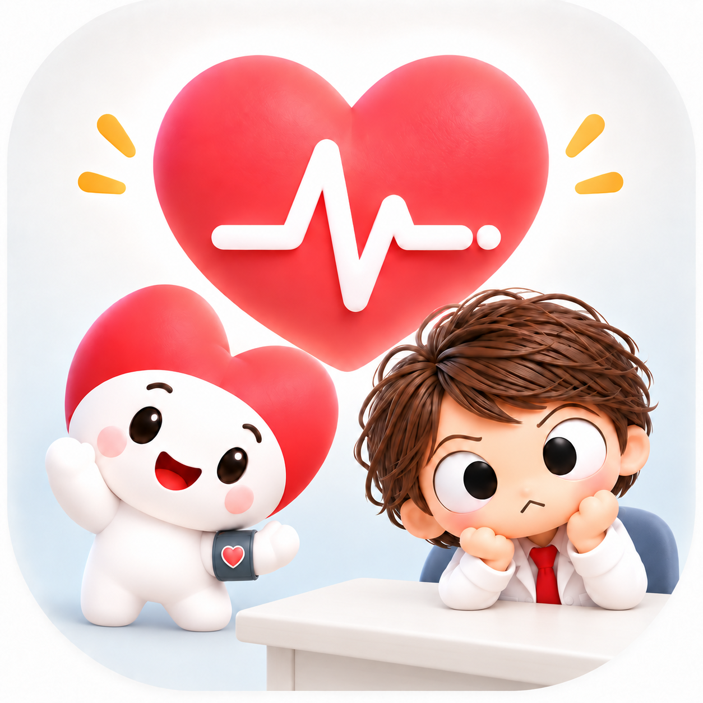

Android版
公開準備中Androidスマートフォンのアプリとして利用。記録はアプリ専用の端末内領域へ保存します。
Google Playでの公開後にご案内します。
日々の記録を、あなたのペースで。
Blood Pressure Kun
血圧・脈拍を記録して、履歴・統計・グラフで振り返る。
Android版とWeb版の公式紹介・利用案内サイトです。

ABOUT THE APP
測定した最高血圧・最低血圧、任意の脈拍を、日時やメモと一緒に残せます。「いつ、どんな値だったか」を履歴で確かめ、期間ごとの統計やグラフで見直せます。
キャラクターのいるCharacter表示と、すっきりしたSimple表示を選べます。日本語・英語・簡体字・繁体字・韓国語・フランス語に対応しています。
記録と振り返りのためのアプリです。スマートフォン自体で血圧を測定したり、病気の診断・治療・予防に関する医学的判断を行ったりするものではありません。
SCREENSHOTS
Android版（Character表示）の記録・履歴・分析画面をご紹介します。画像を選ぶと拡大表示できます。
画面内の数値は、架空のサンプルデータです。
ANDROID & WEB
Androidアプリと、ブラウザで使うWeb版。どちらも、日々の記録を振り返るための血圧記録くんです。
Androidスマートフォンのアプリとして利用。記録はアプリ専用の端末内領域へ保存します。
Google Playでの公開後にご案内します。
ブラウザで利用できるWeb版。対応環境ではホーム画面に追加して、Webアプリとして使えます。
FEATURES
最高・最低血圧、任意の脈拍、メモを記録。朝・昼・夜を選べるほか、測定時刻から時間帯を自動で判定できます。
保存した記録を一覧で確認。入力を間違えたときは編集でき、不要な記録を個別に削除できます。
平均・最大・最小、前回比を確認。月や四半期では前年の同じ時期と比較できます。グラフは時間帯や期間を選んで表示します。
標準CSVで記録を保存・復元。他形式のCSV／TSVも、列や日時の形式を指定して、確認してから取り込めます。
カメラで液晶の数値を読み取り、確認して入力欄へ反映。画像処理は端末内で行い、撮影だけでは記録を保存しません。
Character／Simpleと6言語から選べます。Web版は必要なファイルの取得が済めば、主要機能をオフラインでも利用できます。
BLOOD PRESSURE KUN WEB
Web版は、Androidのブラウザ、iPhone、PCから利用できることを目指して開発しています。対応環境では、ホーム画面やデスクトップへ追加してWebアプリとして開けます。
初回はインターネットに接続して開き、画面に「オフライン利用OK」と表示されるまで待ちます。ファイル取得後は記録・履歴・分析などをオフラインでも使えます。
カメラ、ホーム画面への追加、保存先の選択、自動バックアップはブラウザやOSにより異なります。iPhone実機での最終確認はまだ完了していません。
YOUR RECORDS
Web版の記録は、利用中のブラウザの端末内保存領域に残ります。血圧記録をクラウド上へ保存し、どの端末からでも同期して開くサービスではありません。
対応ブラウザでは自動バックアップも利用できます。初期設定はOFFで、利用者が保存先を選び、新しい記録の保存に成功した後に全記録を書き出します。編集・削除・復元では自動更新しないため、その後は手動バックアップもご利用ください。非対応環境では手動CSVを使います。
保存とバックアップの使い方CAMERA INPUT
液晶全体をガイド枠内に入れて撮影すると、最高血圧・最低血圧・脈拍の候補を読み取ります。画像は端末内で処理し、アプリからOCR用サーバーへ送りません。
反射、字体、角度、ピントによって読み取りに失敗したり、もっともらしい誤った値が出たりすることがあります。血圧計の表示と照合してから「入力欄へ反映」し、最後はいつもの保存操作を行ってください。対応するWebブラウザでは、既存の画像を選んで読み取ることもできます。
PRIVACY
Android版・Web版・このサイトを分けて、保存先、カメラ、広告、データ削除について説明しています。
CONTACT
使い方の疑問や気になる動作は、まずFAQをご確認ください。解決しない場合は、利用している版・OS・ブラウザと、操作の流れをお知らせください。
dotabata21.apps@gmail.com血圧値・メモ・個人情報を含むCSVや写真は、原則として添付しないでください。医療上の相談にはお答えできません。医学的な助言については医師などの医療専門家へご相談ください。
開発・提供：dotabata21 Apps ／ アプリとOSSライセンスについて